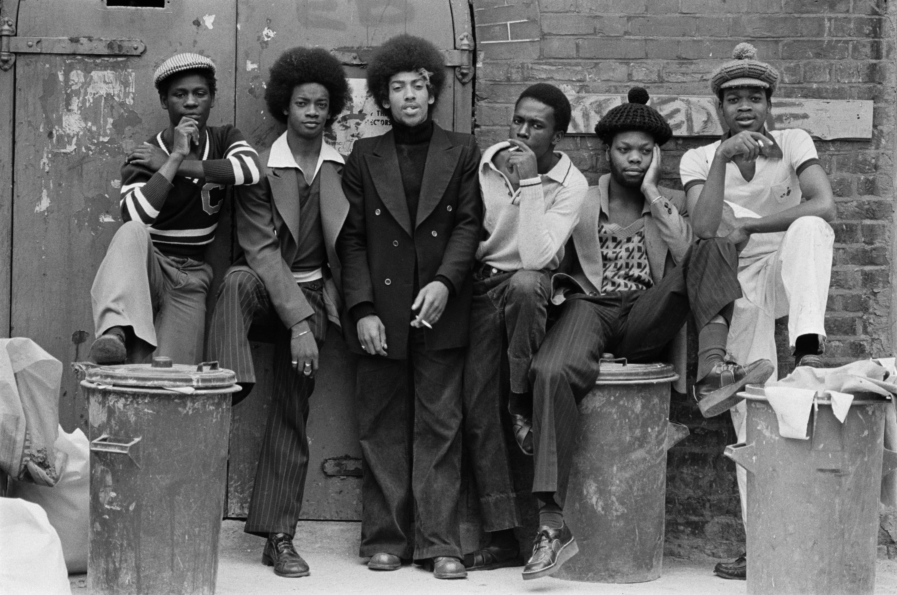
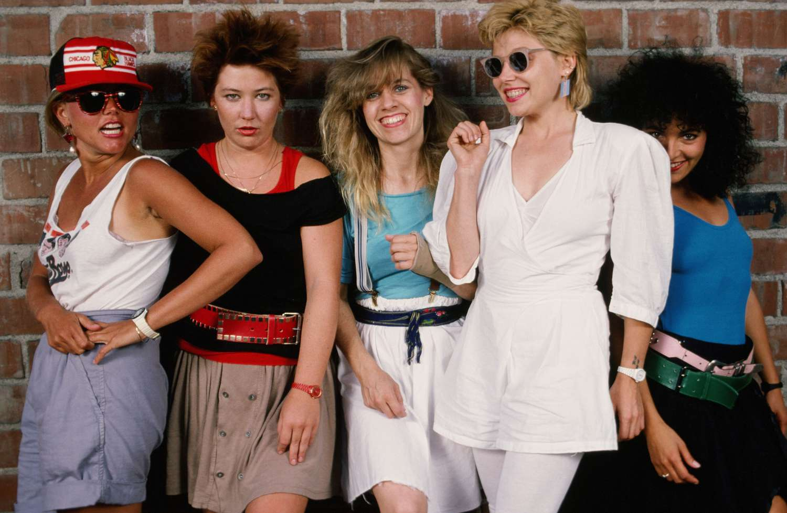
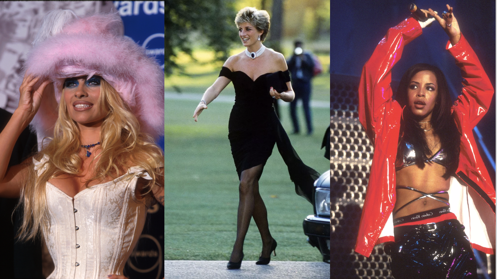

1970-es évek
A 70-es évek divatját a trapéznadrág, a rojtos mellények és a színes, pszichedelikus minták jellemezték. A hippikultúra hatása minden öltözeten érződött.

1980-as évek
Az extravagancia, neon színek, válltömés és a szintetikus anyagok korszaka volt. Az aerobik öltözékek és a popkultúra hatása meghatározó volt.

1990-es évek
A 90-es évek divatja már lazább, kényelmesebb irányba mozdult. A grunge stílus, farmerdzsekik, flanelingek és sportcipők hódítottak.